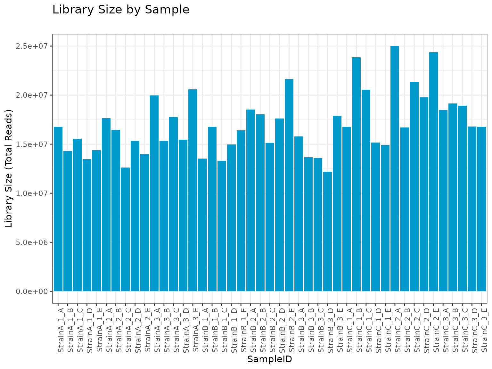
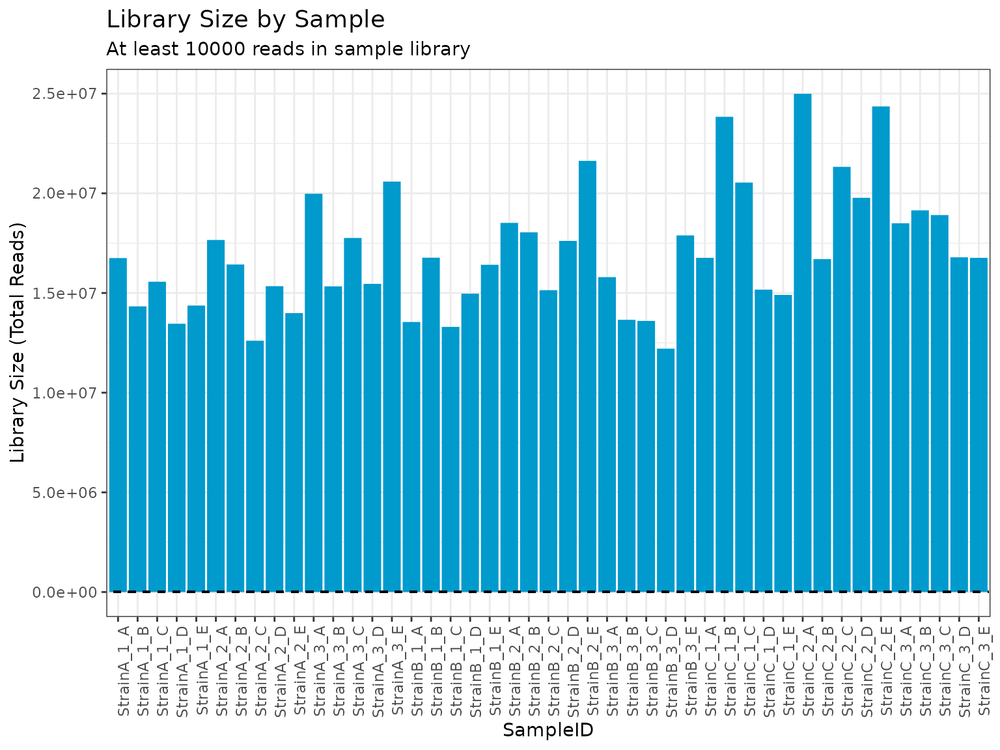
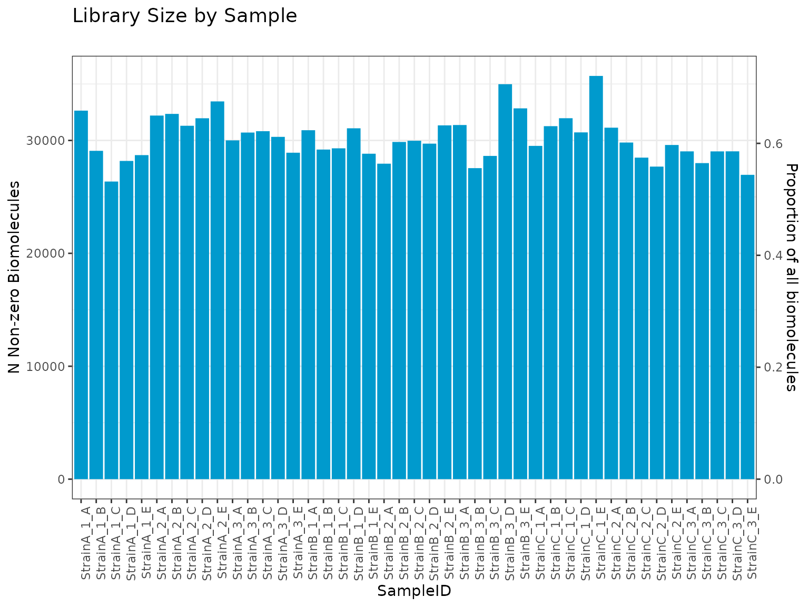

Filter Functions
Kelly Stratton, Lisa Bramer
2023-03-15
Source:vignettes/Filter_Functionality.Rmd
Filter_Functionality.Rmd
Overview
This vignette describes the filter functionality of the
pmartR package. Filters fall into three categories and
their use is a standard part of quality control processing.
Biomolecule filters
Sample filters
Filters specific to seqData objects
In a typical pmartR processing pipeline, these filters
are applied in a certain order during the quality control process.
To utilize a filter, the first step is to create the filter object,
an S3 object whose class is directly tied to the filter. Once a filter
object is created, the plot and summary
functions can be used to see the effects of applying the filter with
certain parameters, and then the filter can be applied to the omicsData
object using the applyFilt function.
If data are paired, the pairing structure can be defined in the
group_designation function, and the pairs will be accounted
for in relevant filters. For biomolecule filters, this means filtering
based on paired differences rather than on individual values. For sample
filters, removal of a sample will be accompanied by the removal of all
members of the corresponding pair.
Biomolecule Filters
The following filters remove entire biomolecules from omicsData objects.
Molecule Filter
The motivation for using the molecule filter is to remove any biomolecules not confidently observed. Typical use of the molecule filter removes any biomolecules that are not observed in at least two samples across the entire dataset, within each group, or within each batch. Depending on downstream analysis goals, a different threshold may be more appropriate.
Below we demonstrate creation and application of the molecule filter on a pepData object. With a minimum number of 2 observations per molecule required across all samples, a summary of the molecule filter object tells us how many biomolecules would be filtered and not filtered out of the dataset.
mypep <- pep_object
# create a molecule filter object
mymolfilt <- molecule_filter(omicsData = mypep)
class(mymolfilt)## [1] "moleculeFilt" "data.frame"
summary(mymolfilt)##
## Summary of Molecule Filter
## ----------------------------------
## num_observations frequency_counts
## 1 930
## 2 1928
## 3 2895
## 4 3826
## 5 4705
## 6 5627
## 7 6443
## 8 7213
## 9 7937
## 10 8647
## 11 9383
## 12 10032
## 13 10678
## 14 11292
## 15 11937
## 16 12592
## 17 13240
## 18 13917
## 19 14571
## 20 15248
## 21 15941
## 22 16800
## 23 17956
## 24 21329
# summary of molecule filter with a specific threshold
summary(mymolfilt, min_num = 2)##
## Summary of Molecule Filter
## ----------------------------------
## Minimum Number:2
## Filtered:930
## Not Filtered:20399
##
## num_observations frequency_counts
## 1 930
## 2 1928
## 3 2895
## 4 3826
## 5 4705
## 6 5627
## 7 6443
## 8 7213
## 9 7937
## 10 8647
## 11 9383
## 12 10032
## 13 10678
## 14 11292
## 15 11937
## 16 12592
## 17 13240
## 18 13917
## 19 14571
## 20 15248
## 21 15941
## 22 16800
## 23 17956
## 24 21329
mypep_molfilt <- applyFilt(mymolfilt, omicsData = mypep, min_num = 2)
# now our data object contains the reduced number of biomolecules
summary(mypep_molfilt)##
## Class pepData
## Unique SampleIDs (f_data) 24
## Unique Peptides (e_data) 20399
## Unique RazorProteins (e_meta) 2916
## Missing Observations 202348
## Proportion Missing 0.413To implement a molecule filter with the minimum required number of observations is within each group, we must first define groups.
# define groups based on a "main effect"
mypep_groups <- group_designation(omicsData = mypep, main_effects = "Phenotype")
# create a molecule filter object
mymolfilt_groups <- molecule_filter(omicsData = mypep_groups, use_groups = TRUE)
class(mymolfilt_groups)## [1] "moleculeFilt" "data.frame"
summary(mymolfilt_groups)##
## Summary of Molecule Filter
## ----------------------------------
##
## Minimum Number is Minimum Number per Group
## ----------------------------------
## num_observations frequency_counts
## 1 6885
## 2 9152
## 3 11013
## 4 12797
## 5 14448
## 6 16036
## 7 17956
## 8 21329
# summary of molecule filter with a specific threshold
summary(mymolfilt_groups, min_num = 2)##
## Summary of Molecule Filter
## ----------------------------------
##
## Minimum Number is Minimum Number per Group
## ----------------------------------
## Minimum Number:2
## Filtered:6885
## Not Filtered:14444
##
## num_observations frequency_counts
## 1 6885
## 2 9152
## 3 11013
## 4 12797
## 5 14448
## 6 16036
## 7 17956
## 8 21329
mypep_molfilt_groups <- applyFilt(mymolfilt_groups, omicsData = mypep_groups, min_num = 2)
# now our data object contains the reduced number of biomolecules
summary(mypep_molfilt_groups)##
## Class pepData
## Unique SampleIDs (f_data) 24
## Unique Peptides (e_data) 14444
## Unique RazorProteins (e_meta) 2389
## Missing Observations 88899
## Proportion Missing 0.256
## Samples per group: Phenotype3 8
## Samples per group: Phenotype1 8
## Samples per group: Phenotype2 8If our samples were run on the instrument over the course of multiple batches, we may wish to implement the molecule filter within each batch.
# define groups based on a "main effect" and "batch id" -- here we pretend that "SecondPhenotype" is describing the batches of samples
mypep_batches <- group_designation(omicsData = mypep, main_effects = "Phenotype", batch_id = "SecondPhenotype")
# create a molecule filter object using the batch information -- we can use both groups and batch or just batch
mymolfilt_batches <- molecule_filter(omicsData = mypep_batches, use_groups = TRUE, use_batch = TRUE)
mymolfilt_batches <- molecule_filter(omicsData = mypep_batches, use_batch = TRUE)
class(mymolfilt_batches)## [1] "moleculeFilt" "data.frame"
summary(mymolfilt_batches)##
## Summary of Molecule Filter
## ----------------------------------
##
## Minimum Number is Minimum Number per Batch
## ----------------------------------
## num_observations frequency_counts
## 1 4198
## 2 6104
## 3 7742
## 4 9252
## 5 10522
## 6 11679
## 7 12860
## 8 14067
## 9 15171
## 10 16376
## 11 17956
## 12 21329
# summary of molecule filter with a specific threshold
summary(mymolfilt_batches, min_num = 2)##
## Summary of Molecule Filter
## ----------------------------------
##
## Minimum Number is Minimum Number per Batch
## ----------------------------------
## Minimum Number:2
## Filtered:4198
## Not Filtered:17131
##
## num_observations frequency_counts
## 1 4198
## 2 6104
## 3 7742
## 4 9252
## 5 10522
## 6 11679
## 7 12860
## 8 14067
## 9 15171
## 10 16376
## 11 17956
## 12 21329
mypep_molfilt_batches <- applyFilt(mymolfilt_batches, omicsData = mypep_batches, min_num = 2)
# now our data object contains the reduced number of biomolecules
summary(mypep_molfilt_batches)##
## Class pepData
## Unique SampleIDs (f_data) 24
## Unique Peptides (e_data) 17131
## Unique RazorProteins (e_meta) 2650
## Missing Observations 135345
## Proportion Missing 0.329
## Samples per group: Phenotype3 8
## Samples per group: Phenotype1 8
## Samples per group: Phenotype2 8Coefficient of Variation (CV) Filter
The coefficient of variation (CV) is the ratio of the standard
deviation to the mean (Ahmed 1995). We can
use the CV calculated for each biomolecule as a quality control filter
to remove highly variable biomolecules. Using the pooled CV, as
pmartR does, enables the experimental groups to be
accounted for. Note that the CV is calculated on the abundance scale (if
already log transformed, the cv_filter() function accounts
for this).
# use the example peptide data with Phenotype as main effect
mycvfilt <- cv_filter(omicsData = mypep_groups)
plot(mycvfilt, cv_threshold = 97)
# we get the same graph if we log2 transform our data
mypep_groups_log2 <- edata_transform(mypep_groups, data_scale = "log2")
mycvfilt_log2 <- cv_filter(omicsData = mypep_groups_log2)
plot(mycvfilt_log2, cv_threshold = 97)
summary(mycvfilt_log2, cv_threshold = 97)##
## Summary of Coefficient of Variation (CV) Filter
## ----------------------
## CVs:
##
## Min. 1st Qu. Median Mean 3rd Qu. Max.
## 0.03514 27.54125 35.54875 37.42133 45.55902 171.45156
##
## Total NAs: 1866
## Total Non-NAs: 19463
##
## Number Filtered Biomolecules: 83
# apply the filter
mypep_cvfilt <- applyFilt(filter_object = mycvfilt_log2, omicsData = mypep_groups_log2, cv_threshold = 97)
summary(mypep_cvfilt)##
## Class pepData
## Unique SampleIDs (f_data) 24
## Unique Peptides (e_data) 21246
## Unique RazorProteins (e_meta) 2979
## Missing Observations 222584
## Proportion Missing 0.437
## Samples per group: Phenotype3 8
## Samples per group: Phenotype1 8
## Samples per group: Phenotype2 8Proteomics Filter
For proteomics data (pepData object where mapping of
peptides-to-proteins is included in e_meta), two additional filters are
available via the proteomics_filter() function.
Redundant Peptide Filter
In some instances, peptides can map to more than one protein;
peptides such as this are called “redundant” or “degenerate”. Redundant
peptides can be removed using the proteomics_filter().
myproteomicsfilt <- proteomics_filter(omicsData = mypep_groups_log2)
summary(myproteomicsfilt, degen_peps = TRUE)##
## Summary of Proteomics Filter
##
## Obs Proteins Per Peptide Obs Peptides Per Protein
## Min. 1 1
## 1st Qu. 1 2
## Median 1 3
## Mean 1 7.15258215962441
## 3rd Qu. 1 8
## Max. 1 235
##
## Filtered 0 0
## Not Filtered 21329 2982
# This results in an error message since there are no redundant peptides
# mypep_redundant <- applyFilt(filter_object = myredundantfilt, omicsData = mypep_groups_log2)Here we have no redundant peptides, so a summary of the filter object indicates that no peptides or proteins are removed. Trying to apply the filter in this scenario results in an error.
Minimum Number of Peptides per Protein Filter
Sometimes it is of interest to remove any proteins that are not “confidently” observed, where “confidently” is defined by the number of peptides observed that map to a given protein. For instance, we could use the following filter to remove any proteins (and their associated peptides) that have fewer than 2 peptides mapping to them.
# use the same filter object as above
# setting min_num_peps = 2 removes any proteins with just a single observed peptide mapping to them; the associated peptides are also removed
summary(myproteomicsfilt, min_num_peps = 2)##
## Summary of Proteomics Filter
##
## Obs Proteins Per Peptide Obs Peptides Per Protein
## Min. 1 1
## 1st Qu. 1 2
## Median 1 3
## Mean 1 7.15258215962441
## 3rd Qu. 1 8
## Max. 1 235
##
## Filtered 0 664
## Not Filtered 21329 2318
mypep_proteomicsfilt <- applyFilt(filter_object = myproteomicsfilt, omicsData = mypep_groups_log2, min_num_peps = 2)IMD-ANOVA Filter
If ANOVA and/or the IMD test will be used for downstream statistical comparisons, any biomolecules for which the desired test cannot be run can be removed using the following filter.
In the case where both ANOVA and IMD will be performed:
myimdanovafilt <- imdanova_filter(omicsData = mypep_groups_log2)
summary(myimdanovafilt, min_nonmiss_anova = 2, min_nonmiss_gtest = 3)##
## Summary of IMD-ANOVA Filter
##
## Total Observations: 21329
## Filtered: 3223
## Not Filtered: 18106
mypep_imdanovafilt <- applyFilt(filter_object = myimdanovafilt, omicsData = mypep_groups_log2, min_nonmiss_anova = 2, min_nonmiss_gtest = 3)## You have specified remove_singleton_groups = TRUE, but there are no singleton groups to remove. Proceeding with application of the IMD-ANOVA filter.If only ANOVA is of interest:
# start with the same filter object as above
summary(myimdanovafilt, min_nonmiss_anova = 2)##
## Summary of IMD-ANOVA Filter
##
## Total Observations: 21329
## Filtered: 4129
## Not Filtered: 17200
mypep_anovafilt <- applyFilt(filter_object = myimdanovafilt, omicsData = mypep_groups_log2, min_nonmiss_anova = 2)## You have specified remove_singleton_groups = TRUE, but there are no singleton groups to remove. Proceeding with application of the IMD-ANOVA filter.If only the IMD test, also referred to as the g-test, is of interest:
# start with the same filter object as above
summary(myimdanovafilt, min_nonmiss_gtest = 3)##
## Summary of IMD-ANOVA Filter
##
## Total Observations: 21329
## Filtered: 3899
## Not Filtered: 17430
mypep_imdfilt <- applyFilt(filter_object = myimdanovafilt, omicsData = mypep_groups_log2, min_nonmiss_gtest = 3)## You have specified remove_singleton_groups = TRUE, but there are no singleton groups to remove. Proceeding with application of the IMD-ANOVA filter.Custom Filter
If certain biomolecules are known a priori to be unwanted in the analysis, those can be removed using a custom filter. For instance if contaminant proteins are identified, or a set of internal standards needs to be removed for a specific portion of the analysis, this filter can be of particular use. Multiple custom filters could be applied to a single dataset, depending on the analysis needs. Biomolecules for removal can be specified based on their presence in e_data or in e_meta.
To remove biomolecules based on their presence in e_data, we implement the filter as follows. Note that this also removes them from e_meta, if applicable.
remove_peps <- mypep$e_data$Peptide[1:10]
mycustomfilt <- custom_filter(omicsData = mypep_groups_log2, e_data_remove = remove_peps)
summary(mycustomfilt)##
## Summary of Custom Filter
##
## Filtered Remaining Total
## SampleIDs (f_data) 0 24 24
## Peptides (e_data) 10 21319 21329
## RazorProteins (e_meta) 2 2980 2982
mypep_custom <- applyFilt(filter_object = mycustomfilt, omicsData = mypep_groups_log2)To remove biomolecules based on their presence in e_meta (such as specifying proteins to remove from a pepData object), we implement the filter as follows. This also removes the associated biomolecules from e_data, as applicable.
remove_prots <- mypep$e_meta$RazorProtein[1:10]
mycustomfilt <- custom_filter(omicsData = mypep_groups_log2, e_meta_remove = remove_prots)
summary(mycustomfilt)##
## Summary of Custom Filter
##
## Filtered Remaining Total
## SampleIDs (f_data) 0 24 24
## Peptides (e_data) 59 21270 21329
## RazorProteins (e_meta) 10 2972 2982
mypep_custom <- applyFilt(filter_object = mycustomfilt, omicsData = mypep_groups_log2)We can also utilize the custom filter and specify only those
biomolecules in either e_data or e_meta that we would like to keep. To
do this, use the arguments e_data_keep and
e_meta_keep.
Sample Filters
The following filters remove entire samples from omicsData objects.
rMd-PAV Filter
The robust Mahalanobis distance squared values associated with the peptide abundances vector (rMd-PAV) is a method which computes a rMd and that can be mapped to a p-value and used to identify outlying samples (Matzke et al. 2011). Any identified samples can be reviewed by the analyst to determine whether to remove them from the dataset.
The metrics on which the log2 robust Mahalanobis distance is based
can be specified using the metrics argument of the
rmd_filter() function. Available metrics include:
Median absolute deviation (MAD): specified as “MAD”
Correlation: specified as “Correlation”
Skewness: specified as “Skewness”
Kurtosis: specified as “Kurtosis”
Proportion Missing: specified as “Proportion_Missing”
For pepData and proData objects, the default is to use all five of the metrics. For metabData and lipidData objects, the default is to exclude the proportion missing (as these data typically do not have much missing data).
When plotting the RMD filter, we can specify a p-value threshold
myrmdfilt <- rmd_filter(mypep_groups_log2)
plot(myrmdfilt, pvalue_threshold = 0.0001)
If we want to look at individual samples, especially if there are samples falling above the threshold line, we can do so using the following. The colored points on each boxplot correspond to the sample that was specified, so we can see where it falls relative to all of the other samples.
plot(myrmdfilt, sampleID = "Sample_35_Phenotype2_A")
Custom Filter
A custom filter can be used to remove entire samples. This is particularly useful if only a subset of potential outliers identified by the rMd filter are to be removed, or if quality control samples that were run within the experiment are no longer needed for a particular analysis step.
mycustomfilt <- custom_filter(omicsData = mypep_groups_log2, f_data_remove = "Sample_35_Phenotype2_A")Similar to the usage of the custom filter for filtering biomolecules,
we could alternately use the f_data_keep argument to
specify which samples to retain in the dataset.
Typical Order of Filter Application
This section applies to all but seqData objects.
A custom filter could be applied at any point, depending on the study and dataset. For instance, if proteomics data and there are contaminant proteins or reverse hits, a custom filter can be used first thing to remove these. If the RMD filter identifies potential outliers but not all are to be removed, a custom filter can be used to remove a subset of samples.
Molecule filter
CV filter (if using–we often do not)
Proteomics filter (if proteomics data)
RMD filter
IMD-ANOVA filter
RNAseq Data Filters
Due to RNAseq data being count data, the typical filters differ
compared to the other data types supported by pmartR.
myseq <- rnaseq_object
summary(myseq)##
## Class seqData
## Unique SampleNames (f_data) 45
## Unique Transcripts (e_data) 49568
## Unique Genes (e_meta) 52222
## Observed Zero-Counts 872181
## Proportion Zeros 0.391The molecule filter and custom filter (either transcripts or samples) are available for seqData objects, if useful for a particular dataset. Not applicable for seqData objects are the CV filter, IMD-ANOVA filter, and RMD filter.
Total Count Filter
The total count filter is based on recommendations in edgeR processing (Robinson, McCarthy, and Smyth 2010), where the low-observed biomolecules are removed. The default recommendation in edgeR is to require at least 10 total counts observed across samples (i.e., if the sum of counts in a row of e_data is < 10, default edgeR filtering would remove this biomolecule).
mytotcountfilt <- total_count_filter(omicsData = myseq)
summary(mytotcountfilt, min_count = 10)##
## Summary of Total Count Filter
## ----------------------
## Counts:
##
## Min. 1st Qu. Median Mean 3rd Qu. Max.
## 1 14 79 15477 3194 15803184
##
## Number Filtered Biomolecules: 10299
myseq_totcount <- applyFilt(filter_object = mytotcountfilt, omicsData = myseq, min_count = 10)
summary(myseq_totcount)##
## Class seqData
## Unique SampleNames (f_data) 45
## Unique Transcripts (e_data) 39269
## Unique Genes (e_meta) 42532
## Observed Zero-Counts 440373
## Proportion Zeros 0.249RNA Filter: Total Library Size Filter
The RNA filter removes samples based on either:
library size (number of reads)
number/proportion of unique non-zero biomolecules per sample
This filter is particularly useful for identifying any samples that contain lower than expected numbers of reads.
# create RNA filter object
myrnafilt <- RNA_filter(omicsData = myseq)
# filter by library size
plot(myrnafilt, plot_type = "library")
plot(myrnafilt, plot_type = "library", size_library = 10000)
summary(myrnafilt, size_library = 10000)##
## Summary of RNA Filter
## ----------------------------------
## Library size cut-off: 10000
##
## LibrarySize NonZero ProportionNonZero
## Min. 12208513 26359.000 0.53177453
## 1st Qu. 14966913 28912.000 0.58327954
## Median 16751973 29865.000 0.60250565
## Mean 17048354 30186.200 0.60898564
## 3rd Qu. 18517261 31299.000 0.63143560
## Max. 24990997 35713.000 0.72048499
## SD 3078177 1978.452 0.03991389
myseq_librarysize <- applyFilt(filter_object = myrnafilt, omicsData = myseq, size_library = 10000)
summary(myseq_librarysize)##
## Class seqData
## Unique SampleNames (f_data) 45
## Unique Transcripts (e_data) 49568
## Unique Genes (e_meta) 52222
## Observed Zero-Counts 872181
## Proportion Zeros 0.391
# filter based on number or proportion of non-zero counts
plot(myrnafilt, plot_type = "biomolecule")
summary(myrnafilt, min_nonzero = 5000)##
## Summary of RNA Filter
## ----------------------------------
## N Non-zero biomolecule cut-off: 5000
##
## LibrarySize NonZero ProportionNonZero
## Min. 12208513 26359.000 0.53177453
## 1st Qu. 14966913 28912.000 0.58327954
## Median 16751973 29865.000 0.60250565
## Mean 17048354 30186.200 0.60898564
## 3rd Qu. 18517261 31299.000 0.63143560
## Max. 24990997 35713.000 0.72048499
## SD 3078177 1978.452 0.03991389
summary(myrnafilt, min_nonzero = 0.2)##
## Summary of RNA Filter
## ----------------------------------
## Proportion Non-zero biomolecule cut-off: 0.200000
##
## LibrarySize NonZero ProportionNonZero
## Min. 12208513 26359.000 0.53177453
## 1st Qu. 14966913 28912.000 0.58327954
## Median 16751973 29865.000 0.60250565
## Mean 17048354 30186.200 0.60898564
## 3rd Qu. 18517261 31299.000 0.63143560
## Max. 24990997 35713.000 0.72048499
## SD 3078177 1978.452 0.03991389
myseq_nonzero <- applyFilt(filter_object = myrnafilt, omicsData = myseq, min_nonzero = 0.2)
summary(myseq_nonzero)##
## Class seqData
## Unique SampleNames (f_data) 45
## Unique Transcripts (e_data) 49568
## Unique Genes (e_meta) 52222
## Observed Zero-Counts 872181
## Proportion Zeros 0.391